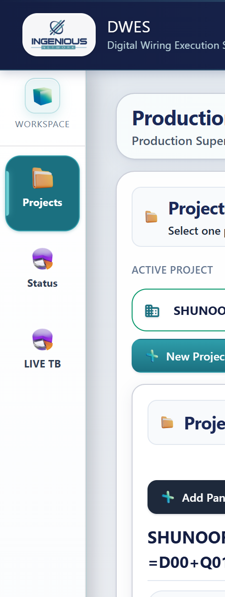
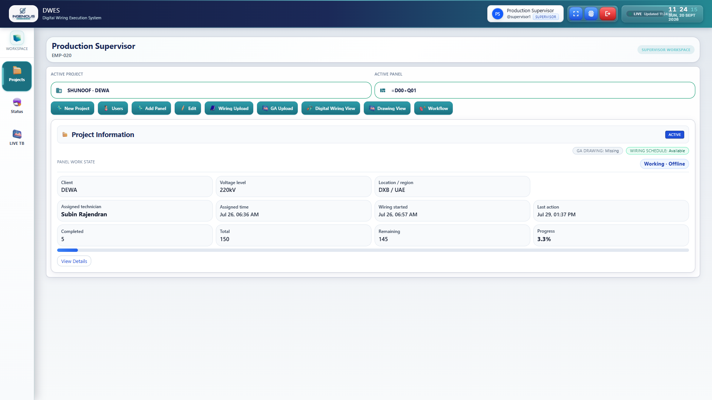
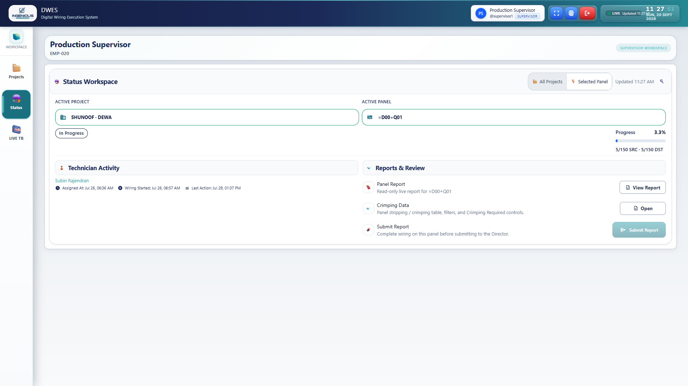
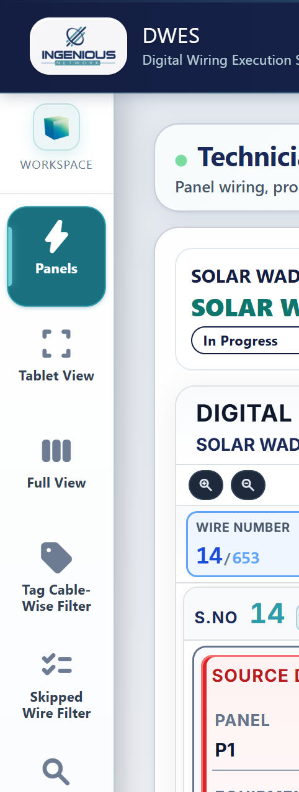
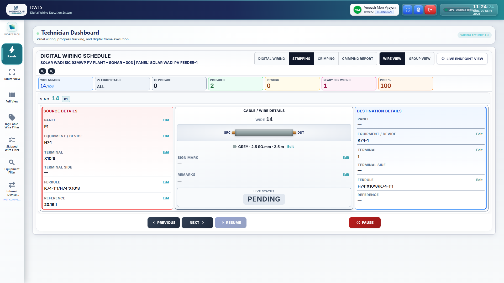
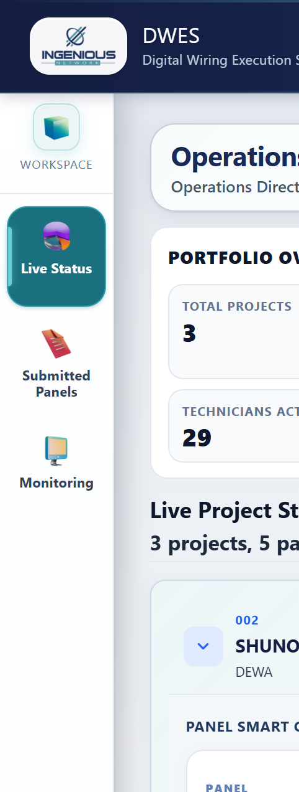
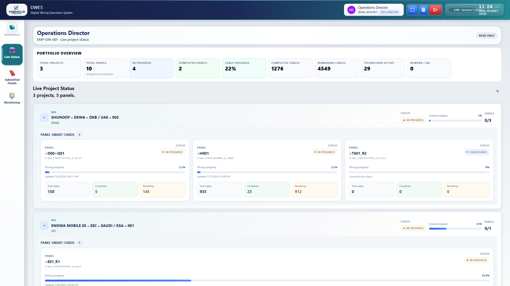
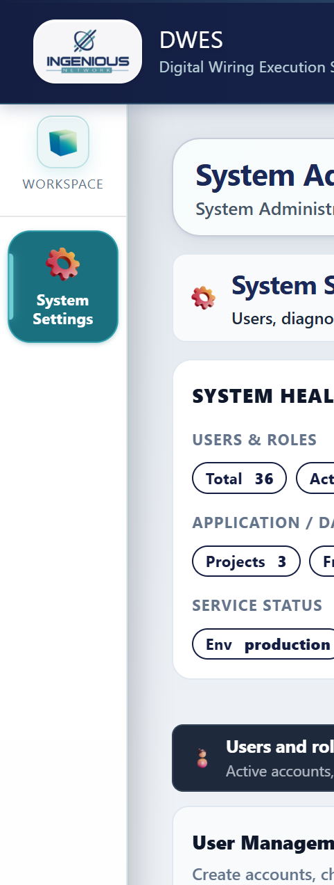
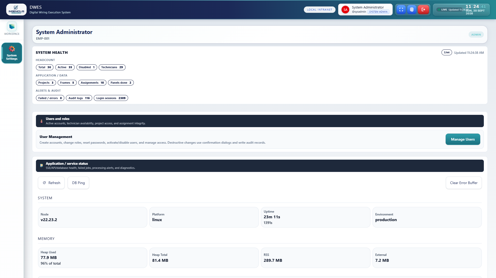

1. Supervisor — Projects
Workflow command bar · Working · Offline · single toolbar (no duplicate CTAs)
Before (Phase 0)

After

Status → Selected Panel (after only): identity in Active selectors · no duplicate Completed/Total/Remaining under progress

2. Technician
No mission KPI strip above wiring · Prep % in matrix
Before

After

3. Director
Single Read Only · linear progress only
Before

After

4. Admin
Headcount health group · no Diagnostics env/uptime/heap duplicate
Before

After
